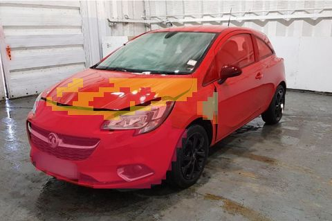

Condición (solo para el revisor): C0 · etiqueta controlada: SUPPORTED

Según la evidencia visual, no es correcto afirmar que el vehículo no presenta abolladuras. Se describe el estado visible.
INSUFFICIENT — SUPPORTED: 0.578 · SUSPICIOUS: 0.422 · INSUFFICIENT: 0.000
U = 0.681 (τU = 0.679) · c̄ = 0.625 (τc = 0.000)
Se abstuvo: incertidumbre U=0.681 > τU=0.679
| nodo | tipo | g | c,q,r,u |
|---|---|---|---|
| 0 | claim | 0.159 | [0.25, 1.0, 0.6803, 0.0639] |
| 1 | source | 0.957 | [1.0, 0.9568, 1.0, 0.0] |
| 2 | visual | 0.007 | [1.0, 0.5505, 0.4202, 0.9712] |
| 3 | visual | 0.001 | [1.0, 0.5903, 0.3162, 0.9949] |
| 4 | visual | 0.004 | [1.0, 0.8753, 0.4202, 0.989] |
| 5 | visual | 0.011 | [1.0, 0.5119, 0.3162, 0.9316] |
| 6 | visual | 0.023 | [1.0, 0.4667, 0.3162, 0.8418] |
| 7 | forensic | 0.090 | [1.0, 0.9568, 0.4518, 0.7906] |
| origen | destino | relación | peso g·p |
|---|---|---|---|
| 0 | 2 | support | 0.007 |
| 0 | 3 | support | 0.001 |
| 0 | 4 | support | 0.004 |
| 0 | 5 | support | 0.011 |
| 0 | 6 | support | 0.023 |
| 2 | 4 | overlap | 0.000 |
| 3 | 5 | overlap | 0.010 |
| 3 | 6 | overlap | 0.015 |
| 4 | 7 | overlap | 0.002 |
| 5 | 6 | overlap | 0.016 |